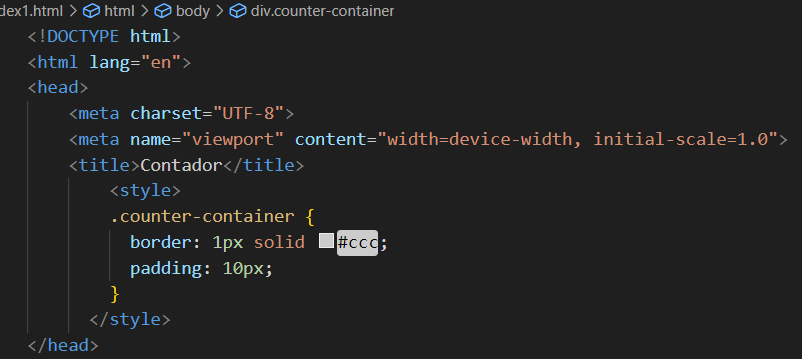
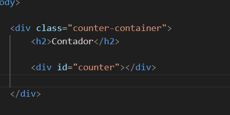
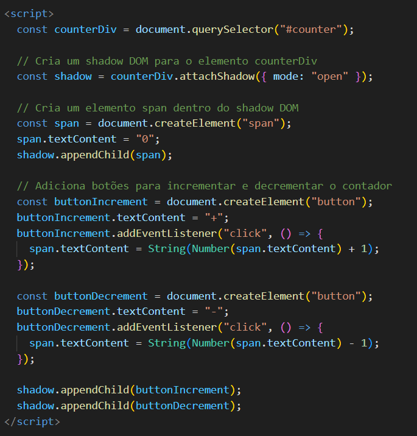

Web Components
Documentação:
Documentação Web Components
Web Components é uma suíte de diferentes tecnologias que permite a criação de elementos,
customizados reutilizáveis — com a funcionalidade separada do resto do seu código —
e que podem ser utilizados em suas aplicações web.
Elementos customizados
Você pode criar seu próprio elemento "tag", com caracteristicas próprias e usar várias vezes.
Exemplo:
* Você cria um botão especial que mudar de cor ao ser clicado, a configuração de mudar de cora já está nele,
onde você adicionar < meu-botao > < /meu-botao> , ele vai funcionar.
Permitir criar elementos personalizados herdando caracteristicas de outro.
Fazendo isso você evita usar muitas "DIVs" no seu código.
Documentação:
Documentação
Usando shadow DOM
Dom => é uma API de documentação de HTML.
Aparti dai podemos fazer manipulações nessa arvoré, sem atrapalha nada.
É bom conhecer JavaScript pois o DOM faz parte dessa linguagem.
Ele permite que você crie um espaço isolado dentro de um elemento da página da web.
O shadow DOM é como criar um espaço privado e isolado para os elementos e estilos de um componente da web,
para que eles não causem confusão com o resto da página.
Isso torna a construção de sites mais organizada e eficiente.
É como se você criasse um quarto e dentro dele adicionar outro quarto,
eles são únicos, se completam e não terão conflitos, erros.
Exemplo de como fica num código simples de html:
* O código é para criar um contador.
A parte do styles, estilo dentro do head
* Só para ter um estilo o contador que foi criado

O html do site, o conteúdo do site
* Foi criado simplesmente uma "div" dentro dela um h2 e outra div

O java script da página, onde entra o shadow DOM
* Aqui foi criado o shadom DOM, que adicionou um "span" e "buttons" ao código.

Documentação:
Documentação
Template Elements
Eles permitem definir conteúdo HTML que não é renderizado imediatamente, mas pode ser clonado e usado posteriormente. Isso é útil para criar modelos reutilizáveis que podem ser preenchidos com dados dinâmicos.
Definição do Template: Você cria um elemento < template > em seu HTML. Dentro deste elemento, você coloca o código HTML que serve como modelo. Isso pode incluir qualquer estrutura de marcação, como elementos, texto e até mesmo outros elementos Web Components.
Conteúdo Oculto: O conteúdo dentro do < template > não é renderizado na página quando a página é carregada. Ele permanece oculto.
Clone e Preenchimento: Quando você deseja usar o conteúdo do template, você pode cloná-lo e preenchê-lo com dados dinâmicos. Isso é especialmente útil para criar várias instâncias do mesmo modelo com diferentes informações.
Inserção no DOM: O clone do template preenchido pode ser inserido no DOM (a estrutura da página) onde você quiser. Isso permite criar componentes personalizados com base no template.